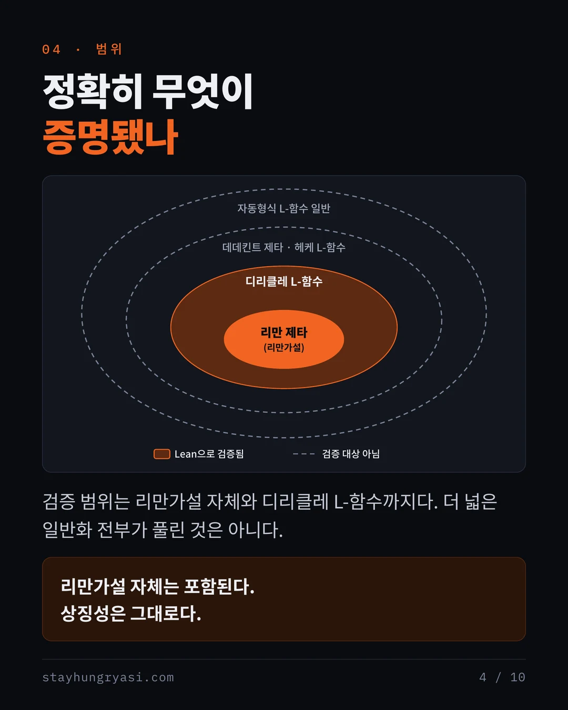
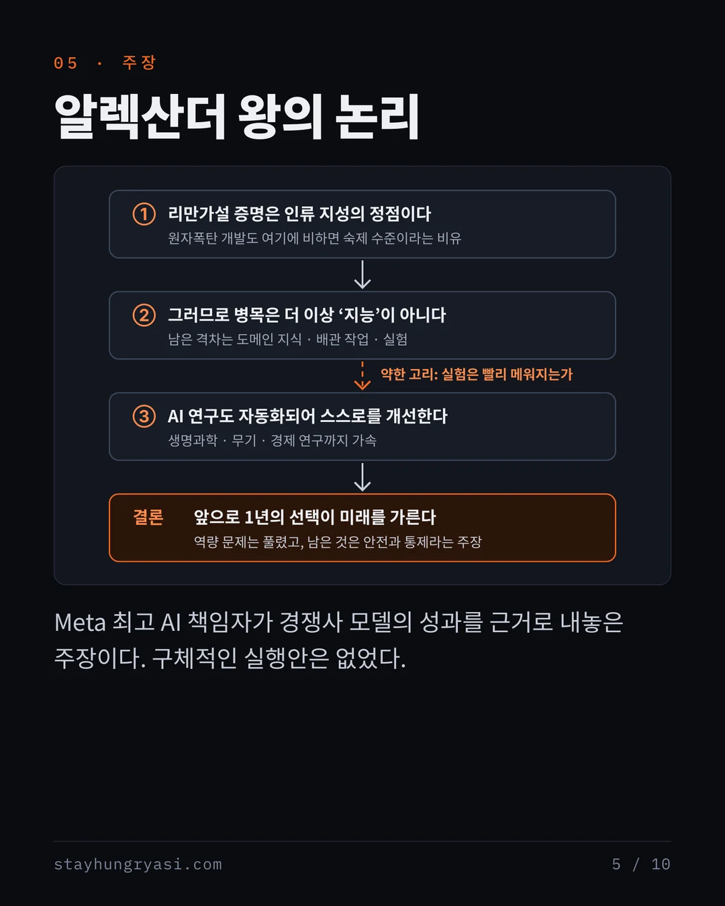
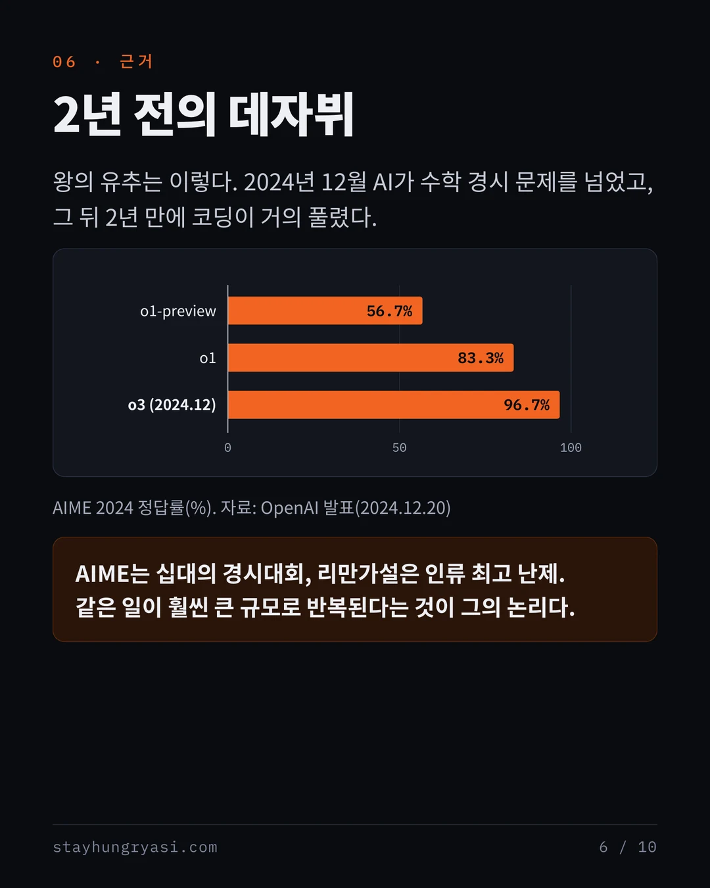
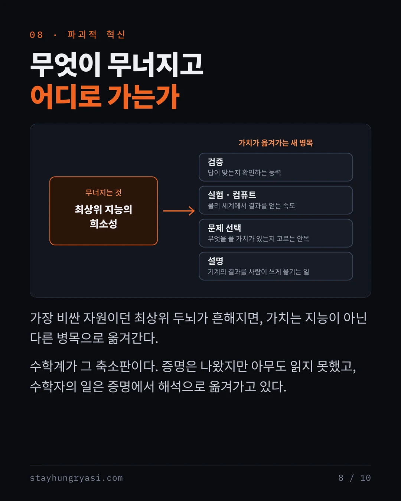
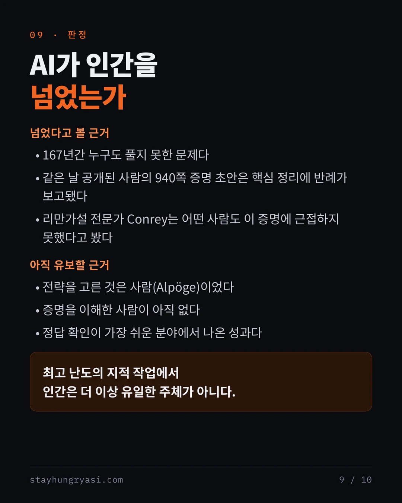

데이터 기준 2026년 11월 23일(한국 시간) · stayhungryasi.com
표기 규칙: 사실은 각 출처가 밝힌 내용이고, 해석과 판정은 작성자 판단이다. 직접 열람하지 못한 원문은 자료 항목에 그렇게 적었다. 그림 5는 순서만 나타낸 개념도이며 실측치가 아니다. 투자 권유가 아니다.
이해충돌 고지: 이 리서치는 Anthropic의 AI(Claude)를 써서 작성했고, 본문은 Claude가 참여한 증명과 Anthropic을 다룬다.
핵심만 10장으로 요약했다. 이미지를 누르면 크게 볼 수 있다.
11월 20일 Anthropic 소속 수학자 Levent Alpöge가 자사 AI 모델 Claude와 함께 찾았다는 리만가설 증명을 공개했고, 하루 뒤 형식 검증 커뮤니티가 이를 옳다고 인증했다. 167년 동안 풀리지 않던 수학 최대 난제가 사람과 AI의 합작으로 풀린 것이다. 이를 두고 Meta의 최고 AI 책임자 알렉산더 왕은 초지능이 오고 있다는 장문의 글을 냈다.
증명이 실재한다는 전제는 튼튼하다. 그러나 여기서 ‘AI의 역량 문제는 풀렸다’는 결론으로 가는 길에는 약한 고리가 하나 있다. 수학은 기계가 정답을 즉시 채점해 주는 분야이고, 다른 분야는 그렇지 않다는 점이다. 이번 사건의 의미는 초지능의 도래보다, 가장 비싼 자원이던 최상위 지능의 희소성이 흔들리기 시작했다는 데서 찾는 편이 정확하다.
Alpöge는 4쪽짜리 노트로 결과를 알렸고, 증명 본체는 사람이 읽는 논문이 아니라 컴퓨터가 검사하는 Lean 코드 1,700만 줄로만 공개했다. 사람 말로 풀어 쓴 초안은 25만 쪽을 넘어 공개하지 않았다고 한다. Lean·Mathlib 커뮤니티는 11월 21일 공동성명으로 명제와 증명이 모두 옳다고 인증했으며, MIT의 Andrew Sutherland를 비롯한 여러 연구자가 독립적으로 재현했다.
| 구분 | 확인된 것 | 아직 남은 것 |
|---|---|---|
| 증명의 정확성 | 175,187개 모듈이 오류 없이 컴파일되었고, 서로 독립적으로 작성된 여러 검사기가 통과시킴. 숨은 가정 없이 표준 공리 3개만 사용 | 일부 재현성 점검이 진행 중이며, 같은 입력에 출력이 달라지는 모듈 1개의 원인은 조사되지 않음 |
| 증명의 범위 | 리만가설, 그리고 디리클레 L-함수에 대한 일반화 리만가설 | 데데킨트 제타, 헤케 L-함수, 자동형식 L-함수 일반은 대상이 아님 |
| 사람의 이해 | 전략은 Alpöge가 골랐고 막판은 Claude가 앞섰다고 본인이 밝힘 | 수학적 논증을 읽고 이해한 사람이 아직 없음. 해설은 추후 작성 예정 |
| 공식 인정 | 형식 검증 커뮤니티의 인증 | Clay 연구소 목록은 미해결 유지. 상금은 학술지 게재와 2년 검증이 필요 |
범위는 정확히 짚어 둘 필요가 있다. 언론이 ‘일반화 리만가설’이라고 부른 것은 그림 2의 안쪽 두 층까지다. 리만가설 자체가 포함되므로 상징성은 온전하지만, 수학적 파급은 흔히 알려진 것보다 한 단계 좁다. 한편 발표가 Anthropic 상장(11월 19일) 바로 다음 날이었다는 점도 기록해 둔다. Alpöge는 시점이 나빴다고 인정하면서 의도된 일정은 아니라고 밝혔다.
왕의 글은 세 단계로 짜여 있다. 리만가설 증명은 인류가 이룬 어떤 것과도 견줄 수 없는 지적 성취다. 그러므로 AI의 병목은 더 이상 지능이 아니고, 남은 격차는 도메인 지식과 배관 작업과 실험뿐이다. AI 연구는 리만가설보다 쉬우니 AI가 AI 연구를 자동화해 스스로를 개선하게 된다. 그는 이로부터 역량 발전의 과학·기술 문제는 사실상 풀렸으며, 이제 안전과 통제를 고민할 시간은 1년 남짓이라고 결론짓는다.
그가 내세우는 근거는 2년 전의 경험이다. 2024년 12월 OpenAI의 o3가 고교 수학 경시대회 AIME 2024에서 96.7%를 기록했을 때, 부족했던 것은 지능이 아니라 도메인 지식과 맥락이었다. 그 틈을 메우는 데 2년이 걸렸고 그 결과 코딩이 거의 해결되었다. AIME가 십대의 경시대회라면 리만가설은 인류 최고의 난제이니, 같은 일이 훨씬 큰 규모로 반복된다는 것이다.
이 논증의 약한 고리는 두 번째에서 세 번째 단계로 넘어가는 대목이다. 수학에는 Lean이라는 완벽한 채점기가 있어 틀린 시도를 즉시 걸러낼 수 있다. 코딩도 테스트를 돌리면 곧 결과가 나온다. 반면 AI 연구는 대규모 학습이라는 실험에 묶여 있고, 신약과 경제는 한 번의 검증에 몇 달에서 몇 년이 걸린다. 왕도 실험과 데이터와 피드백 루프가 별도의 난관임을 인정한다. 다만 그것을 지난 2년처럼 곧 메워질 배관 작업으로 본다. 쟁점은 그 배관이 코딩 때와 같은 속도로 메워지느냐이며, 이 부분은 주장일 뿐 아직 근거가 제시되지 않았다.
발언자의 위치도 함께 읽어야 한다. 왕은 Meta Superintelligence Labs를 이끄는 인물이고, 경쟁사 모델의 성과를 초지능의 증거로 인정했다는 점은 주장에 무게를 싣는다. 반면 업계가 현재의 경로와 다르게 가야 한다고 하면서도 구체적인 실행안은 내놓지 않았다.
지금까지 연구와 금융과 전략에서 가장 비싼 자원은 최상위 두뇌였다. 이번 사건은 그 희소성이 무너질 수 있다는 지금까지 가장 강한 증거다. 어떤 자원이 흔해지면 가치는 여전히 희소한 다른 곳으로 옮겨간다. 답이 맞는지 확인하는 능력, 물리 세계에서 실험 결과를 얻는 속도, 무엇을 풀지 고르는 안목, 그리고 기계가 낸 결과를 사람이 쓸 수 있게 옮기는 일이 그 후보다.
수학계가 이미 그 축소판을 보여 주고 있다. 증명은 나왔지만 아무도 읽지 못했고, 수학자의 일은 증명하는 것에서 기계의 증명을 압축하고 해석하는 쪽으로 옮겨가고 있다. 왕이 경고한 ‘인간이 이해하거나 감시할 수 없는 속도’는 25만 쪽짜리 증명 앞에 선 수학계의 현재 모습과 같다.
리만가설이 참이라는 가정 위에 세워진 정리 가운데, 이번 검증 범위에 드는 것은 조건이 떨어져 나간다. 다만 범위가 디리클레 L-함수까지이므로 모든 조건부 정리가 한꺼번에 승격되는 것은 아니다. 또 리만가설은 소수의 분포에 관한 명제이지 인수분해 방법을 주는 것이 아니어서, 이 증명으로 RSA 같은 암호가 깨지지는 않는다.
| 리만가설을 가정했던 결과 | 필요한 가설 | 이번 검증으로 |
|---|---|---|
| 소수정리 오차항의 최선 추정 | 리만가설 | 조건 해소 |
| Miller의 결정론적 소수 판정 | 디리클레 L-함수의 일반화 리만가설 | 조건 해소 |
| Hooley의 Artin 원시근 추측 증명 | Kummer 체의 데데킨트 제타 | 범위 밖 |
| 유효 Chebotarev 밀도 정리 | 일반 수체의 데데킨트 제타 | 범위 밖 (유리수체 위 아벨 확대만 해당) |
증명이 어떤 길로 갔는지도 관심사다. 공개 토론에 올라온 전문가의 초기 독해에 따르면 핵심 단계가 자동형식과 갈루아 표현을 다루는 논증으로 보인다고 한다. 이 독해가 맞다면 전통적인 해석적 접근이 아닌 다른 경로로 풀린 것이어서, 그 과정에서 만들어진 도구가 결과 못지않은 수확이 될 수 있다. 다만 이는 아직 확인되지 않은 관측이다.
상징으로는 그렇다고 볼 근거가 적지 않다. 같은 날 스탠퍼드 쪽에서 공개된, AI 없이 사람이 쓴 940쪽 증명 초안은 핵심 정리에 반례가 보고되어 형식화 작업이 보류되었다. 리만가설 전문가 Brian Conrey는 수학사에서 가장 큰 사건이라고 평하면서, 어떤 사람도 이 증명을 찾아내기 직전에 있지 않았다고 보았다. 다만 그는 원고를 보기 전에 한 말이다.
유보할 이유도 분명하다. 전략을 고른 것은 사람이었고, 성과는 정답 확인이 가장 쉬운 분야에서 나왔으며, 넘어섰다는 말이 이해까지 포함한다면 아직 기계도 사람도 이 증명을 설명하지 못했다. 정확한 표현은 ‘AI가 인간을 넘었다’보다 ‘최고 난도의 지적 작업에서 인간이 더 이상 유일한 주체가 아니게 되었다’일 것이다.
| 지켜볼 것 | 의미 |
|---|---|
| 사람이 읽을 수 있는 해설의 공개 | 이해의 공백이 메워지는지, 수학자의 역할이 실제로 어떻게 바뀌는지 보여 줌 |
| Clay 연구소의 판정 | 학술지 게재와 2년 검증이 요건. AI와의 합작을 제도가 어떻게 인정하는지의 선례 |
| 더 넓은 L-함수로의 확장 | Alpöge는 가능하다고 보나 남은 작업이라고 밝힘. 수학적 파급의 크기를 결정 |
| 사람이 쓴 증명 초안의 수정본 | 반례가 해소되면 ‘문제가 풀릴 때가 되었다’는 해석에 힘이 실림 |
| 실험이 필요한 분야로의 전이 속도 | 왕의 논증에서 가장 약한 고리를 직접 검증하는 지표 |
Science 기사, Alpöge의 노트 원본, 공동성명 원문은 직접 열람하지 못해 여러 보도로 교차 확인했다. 4장의 정리와 가설의 대응은 표준 문헌 지식에 따랐다.